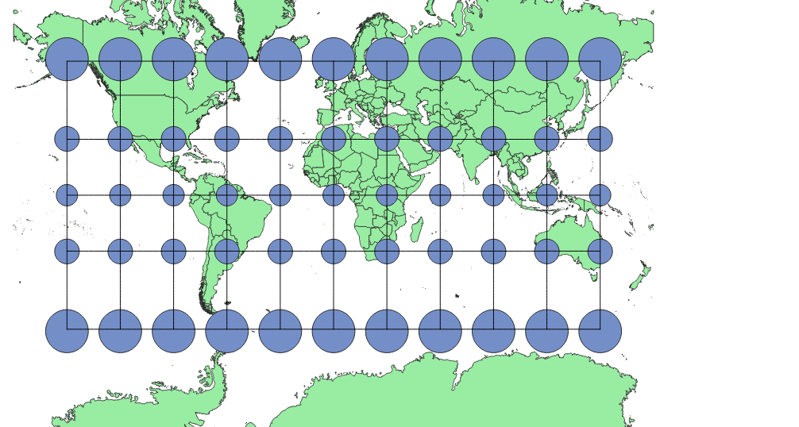
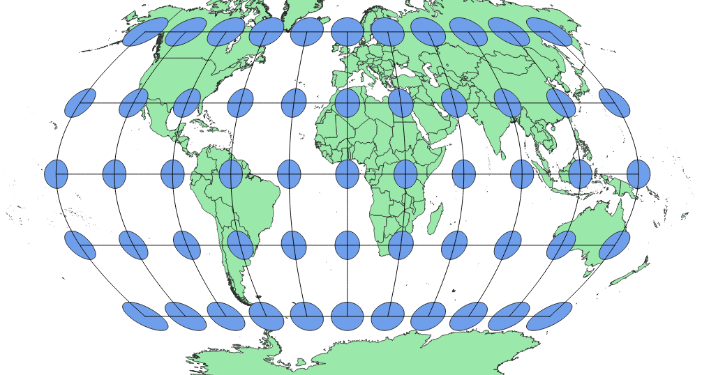
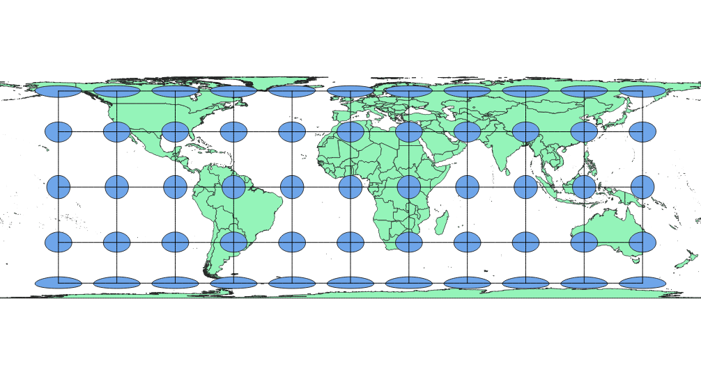
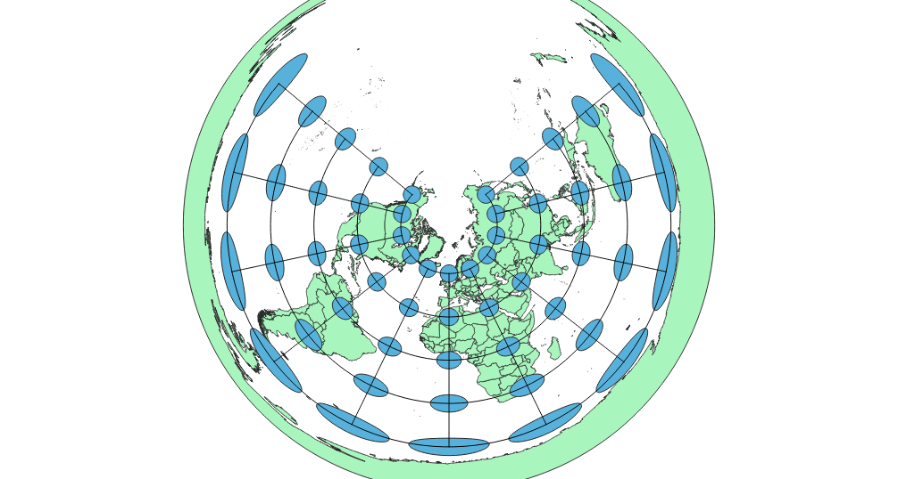
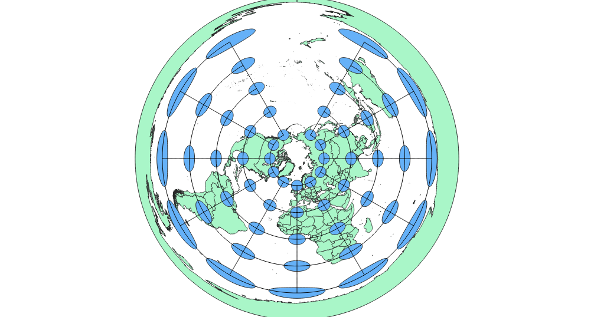
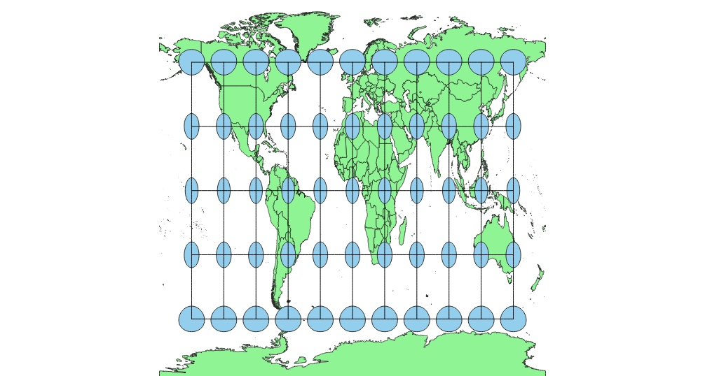
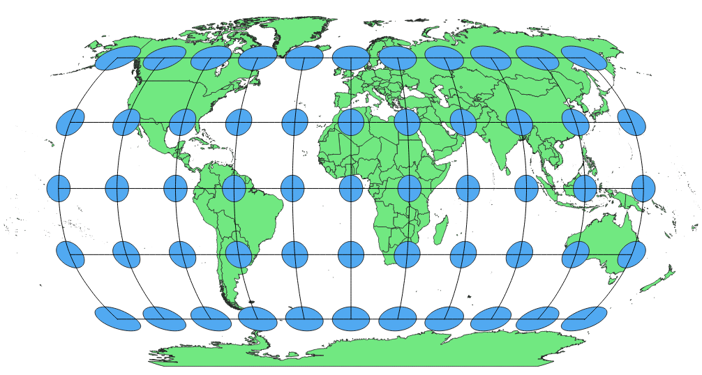

In this project I learned how to display images in different projections
I displayed the images in QGIS using different projections that varied based on the different factors that they distorted, as well as the features that each one emphasized.
WGS84 Projection
This projection emphasizes true directions and distances, in that any line drawn will indicate a true compass direction. However, at the same time it greatly distorts features at the poles by stretching or enlarging them.

Aitoff Projection
The Aitoff Projection seeks to limit distortion globally, and largely succeeds, except for some vertical stretching towards the poles and international date line at the equator.

Pseudo Mercator
The Pseudo Mercator also strives to maintain true compass points and distances, but still suffers from polar distortion on both the horizontal and vertical planes. Features like Greenland and northern Russia are much larger relative to say Africa or Central America.

Winkel Sphere
The Winkel Sphere is most accurate towards the equator and prime meridian, with small levels of distortion at the international date line, and larger levels towards the poles. It generally maintains the shape of features, but with some stretching.

Cylindrical Equal Area
This projection maintains equal area between world features, while having extreme horizontal stretching to the point that polar regions are almost squished onto the map.

Equidistant Conic
This projection ensures proper distance measurements and largely maintains features closer to the north pole with little to no distortion. The largest area of issue is the south pole, with Antarctica stretched into a world-encompassing ring.

North Pole Azimuthal Equidistant
Similarly to the conic projection, this one seeks to protect proper distance portrayal and largely succeeds in portraying the north pole area accurately. Once again, distortion increases towards the south pole, and Antarctica is once more a global ring.

Equidistant Cylindrical
This projection, contrary to most others here, minimzes distortion at the poles while vertically stretching towards the equator. It also seeks to maintain accurate portrayals of distance.

Robinson
The Robinson projection tries to minimize multiple factors of distortion, and though areas at the poles appear larger than normal, it is not to the extreme as given in a mercator projection or elsewhere.

Data used for this project
Download Natrual Earth 1:10m Cultural Vector